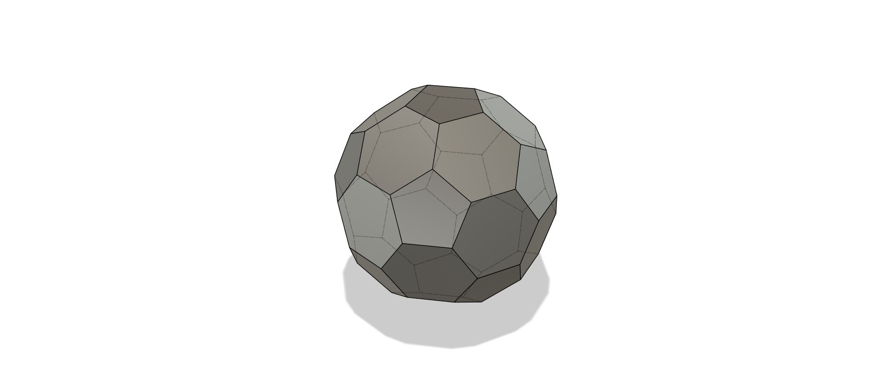

Systems Thinking
Please refer to the PDF document for the detailed Systems Thinking assignment content.
Laser Cutting
Hollow Sphere - Truncated Icosahedron

INDUSTRIAL DESIGN & RAPID PROTOTYPING
Introduction
In geometry, the truncated icosahedron is a polyhedron constructed by truncating all the regular icosahedron's vertices. It is commonly seen in footballs (soccer balls) with white hexagons and black pentagons. This structure is used in geodesic domes and is an example of both an Archimedean solid and a Goldberg polyhedron.
Other Forms of Spheres
-
Hemisphere joining: Two hemispherical shells are formed and joined together.
-
Geodesic Sphere - Segmented: Uses pentagons and hexagons (used in this assignment).

-
Layered Construction: Stacking concentric rings to form a sphere.
-
Balls: Cutting and assembling curved surfaces.
My Approach: Truncated Icosahedron
-
Step 1: Start with a regular icosahedron.
-
Step 2: Truncate the vertices.
-
Step 3: Remove top and bottom faces.
Rose color: top and bottom faces
Cyan: repetition of faces -
Step 4: Close the sphere by adding top and bottom faces.
 -
Step 5: Form a solid cover to get the hollow sphere.
-
Step 6: Add joints for assembly.
-
Step 7: Prepare pieces for laser cutting.
-
Step 8: Cut, fold, and assemble.
-
Cut Piece:
-
Final Piece:

-
Cut Piece:
3D Modelling & Animation
UI/UX
Below is an embedded Figma prototype of the UI/UX assignment.